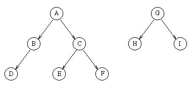

shifttree is a tool to extract inheritance hierarchy from a set of Shift source files. The output is a text file usually rendering an inheritance forest (a set of inheritance trees) where each parent represents the base class and its children represent the inherited classes. The level of indentation in each line indicates the level of each node in the corresponding tree.

For example, shifttree generates the following output for the forest above:
A
B
D
C
E
F
G
H
I
shifttree first forms a list of files to scan by adding source files specified by each file argument and by searching for additional source files recursively through the directories specified by each dirname argument. Then, it passes each file in the list through the C preprocessor (cpp(1)) to eliminate the comments. Finally, it scans the uncommented version of each source file to extract the inheritance hierarchy. If the -Sfile option is specified, then the output is saved into file. Otherwise, it is redirected to the standart output.
-E
-Idirectory
-Sfile
-Lfile